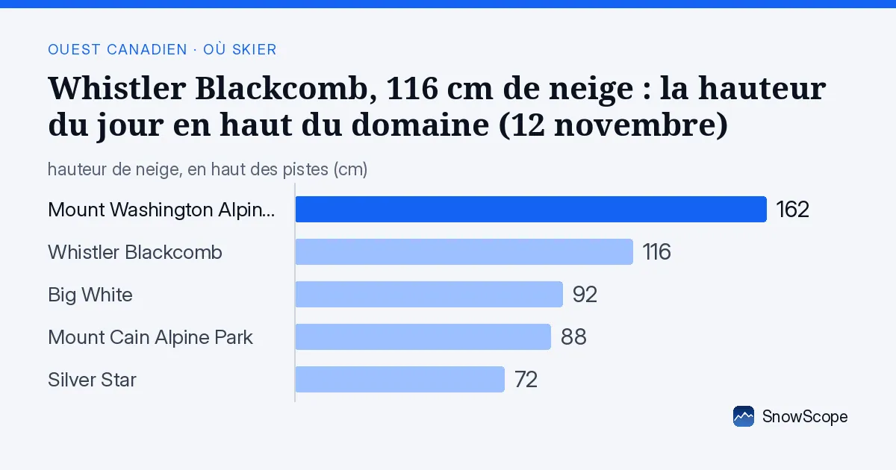

Whistler Blackcomb, 116 cm de neige : la hauteur du jour en haut du domaine (12 novembre)
Whistler Blackcomb se situe à 116 cm sur les pentes supérieures aujourd'hui, la deuxième plus grande épaisseur de neige en Colombie-Britannique après Mount Washington Alpine Resort avec 162 cm. La différence clé est l'altitude : la neige de Whistler s'épaissit à mesure que vous montez, atteignant 85 cm au sommet (2 259 m), tandis que les pentes inférieures restent minces—un schéma typique en début de saison sur les 39 stations enneigées de la région.
Consultez les prévisions neige en temps réel pour Whistler Blackcomb sur l'application SnowScopeHauteurs de neige, alertes poudreuse et carte 3D, gratuitement.
Comment Whistler se compare en ce moment
Mount Washington Alpine Resort domine avec 162 cm, mais Whistler Blackcomb rattrape rapidement. Big White se classe troisième avec 92 cm, Mount Cain Alpine Park avec 88 cm, et Silver Star avec 72 cm. Ces cinq stations retiennent la majeure partie de la neige de la région ; les 34 autres en ont moins.
La couverture neigeuse en Colombie-Britannique s'est réduite de 281 250 km² il y a deux jours à 255 860 km² aujourd'hui. Au 15 novembre, seuls 245 900 km² resteront blancs—une perte typique pour mi-novembre alors que les basses altitudes perdent leur mince manteau de début de saison.
| Station | Hauteur de neige | Neige fraîche, 72 h | Attendu, jours suivants | Sommet |
|---|---|---|---|---|
| Mount Washington Alpine Resort | 162 cm | 4 cm | 7 cm | 1 569 m |
| Whistler Blackcomb | 116 cm | 40 cm | 83 cm | 2 259 m |
| Big White | 92 cm | 4 cm | 2 cm | 2 271 m |
| Mount Cain Alpine Park | 88 cm | 15 cm | 37 cm | 1 616 m |
| Silver Star | 72 cm | 2 cm | 2 cm | 1 886 m |

L'histoire verticale à Whistler
La profondeur de neige à Whistler change avec l'altitude. À la base (653 m) il n'y a pas de neige au sol. Montez à mi-montagne (1 456 m) et vous trouvez 38 cm. Le sommet (2 259 m) retient 85 cm. Cette stratification signifie que le haut de la montagne est l'endroit où le vrai ski existe en ce moment.
Le niveau de congélation le 12 novembre varie de 2 240 m à 2 670 m à Whistler, donc l'ensemble de la montagne se trouve dans de l'air froid. Au 14 novembre, ce niveau chute à 1 460–1 670 m, et la neige fraîche tombera sous forme de poudre plutôt que de grésil ou de pluie.
La neige qui arrive cette semaine
Les prévisions apportent 83 cm de neige nouvelle à Whistler Blackcomb d'ici le 15 novembre. La majeure partie (59 cm) arrive le 15 novembre. C'est la plus grande tempête de la semaine : Mount Cain Alpine Park en reçoit 37 cm, tandis que Mount Washington Alpine Resort n'en recueille que 7 cm.
Le timing importe. La neige en début de semaine (13 et 14 novembre) sera légère—1 et 23 cm. Les précipitations importantes arrivent à la fin, donc les conditions peuvent changer rapidement. Consultez la carte le matin où vous prévoyez de skier.
Whistler par rapport aux novembre passés
À mi-montagne (1 456 m), Whistler affiche 30 cm aujourd'hui, bien en dessous des 80 cm typiques pour le 12 novembre. Seulement 3 des 46 derniers hivers ont été aussi minces à cette altitude aussi tôt. La neige est en retard de calendrier.
Big White raconte une histoire différente. Sa mi-montagne (1 891 m) retient 44 cm, plus profond que pour 39 des 46 derniers hivers à cette date. Cette station est en avance sur la normale, bien qu'elle n'ait reçu presque pas de neige nouvelle au cours des trois derniers jours.
Ce que vous devez savoir
La neige en début de saison est mince et inégale. Les rochers, les chicots et l'herbe se cachent juste sous la surface dans les zones de base et mi-montagne. Skiez sur les pistes damées jusqu'à ce que l'enneigement complet s'établisse en décembre.
L'ombre économise la neige. Les pentes hautes exposées au nord restent gelées plus longtemps que les terrains exposés au sud. Les après-midis chauds, recherchez l'altitude et l'exposition.
Conseils aux skieurs
- Visez les pentes supérieures et crêtes à Whistler Blackcomb où 85 cm reposent au sol. Le terrain inférieur est marginal.
- Attendez la tempête de vendredi (15 novembre) : 59 cm sont prévus à Whistler. Prévoyez de skier après qu'elle se soit stabilisée ; les conditions peuvent être instables immédiatement après les fortes chutes de neige.
- Avant le 14 novembre, le niveau de congélation se situe haut à Whistler (jusqu'à 2 680 m le 13 novembre). La neige mouillée est possible sur la haute montagne en début de semaine. La neige se transformera en poudre à mesure que l'air froid arrive les 14–15 novembre.
- Le ski de randonnée et le ski hors-piste en début de saison comportent des risques d'avalanche sur les pentes fraîches. Lisez le bulletin officiel d'avalanche avant de quitter la piste.
- Consultez l'application SnowScope pour une alerte de neige fraîche à Whistler Blackcomb afin de ne pas manquer l'événement principal de la semaine le 15 novembre.
À propos de ces chiffres
Les hauteurs de neige des stations sont la neige la plus épaisse sur le haut du domaine à la date indiquée ; ce sont des estimations pour une zone, pas une mesure en un point. Les prévisions peuvent changer. Consultez toujours le bulletin d'avalanche officiel avant le hors-piste.
Bulletins d'avalanche officiels: Avalanche Canada
Citer ce bulletin
Pour la recherche, l'enseignement ou la presse : chiffres et graphiques réutilisables librement sous CC BY 4.0 avec cette citation.
SnowScope (2026), Whistler Blackcomb, 116 cm de neige : la hauteur du jour en haut du domaine (12 novembre), https://snowscope.app/blog/fr/2026/11/western-canada-whistler-blackcomb-snow-depth-today-12-november-2026.html, consulté le 2026-11-12
SnowScope (Atlas Labs). (2026, November 12). Whistler Blackcomb, 116 cm de neige : la hauteur du jour en haut du domaine (12 novembre). SnowScope snow reports. https://snowscope.app/blog/fr/2026/11/western-canada-whistler-blackcomb-snow-depth-today-12-november-2026.html
BibTeX
@misc{snowscope2026westerncanadawhistlerbla,
author = {{SnowScope (Atlas Labs)}},
title = {Whistler Blackcomb, 116 cm de neige : la hauteur du jour en haut du domaine (12 novembre)},
year = {2026},
month = nov,
howpublished = {\url{https://snowscope.app/blog/fr/2026/11/western-canada-whistler-blackcomb-snow-depth-today-12-november-2026.html}},
note = {Published 2026-11-12 17:37 UTC; accessed 2026-11-12}
}· CC BY 4.0 · Méthodes, données et outils →
Whistler Blackcomb : neige et température selon l'altitude, cet hiver vs l'hiver dernier (outils) →
Suivre Whistler Blackcomb
Gratuit : un message quand la neige arrive, et la météo chaque matin.